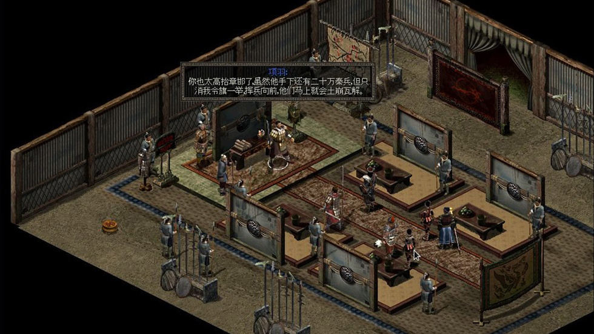
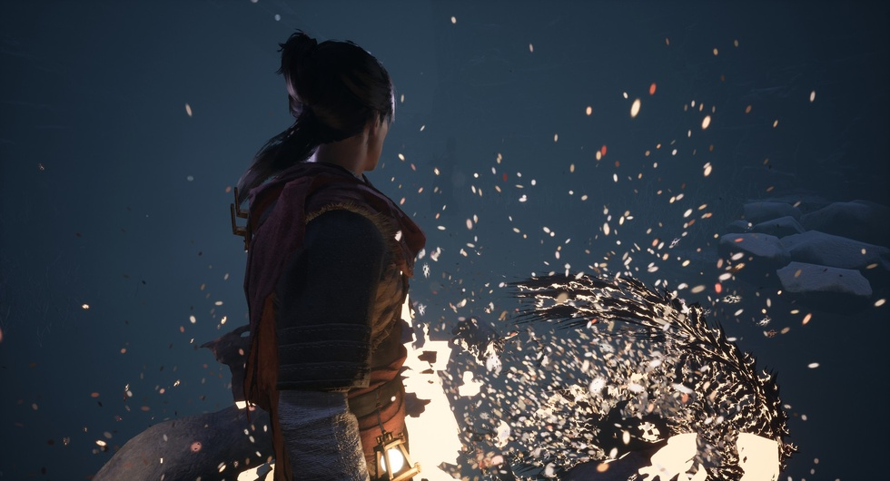
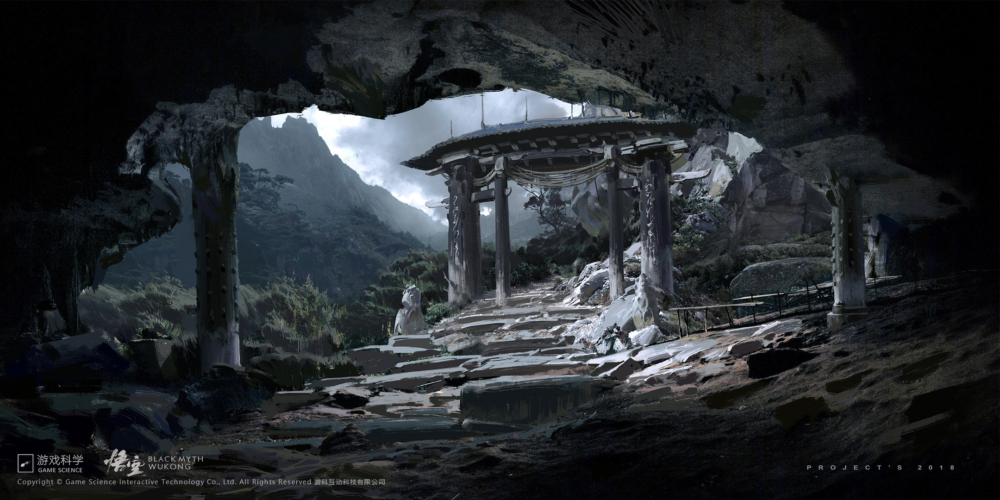

连FC盗版黄卡都敢摆上台面
那些年我们玩过的游戏，来路大多说不清楚。走到展区摆放FC盗版黄卡的玻璃柜前，我才意识到这场展览不一样——策展方没打算抹去产业起步阶段那些不光彩的过往，连1997年翻车的《血狮》实体藏品，也和同年诞生的《剑侠情缘》并排搁一块。光辉和阴霾放在同一面墙上，谁也不替谁遮羞。评判一场展览是立丰碑还是真修史，最简单的尺子就看它容不容得下失败和灰色。盗版卡带、口碑扑街的作品跟经典正版摆在一起，这态度本身，就是对行业史最大的尊重。
1985年的中华学习机CEC-I躺进玻璃柜那天，距离中国第一款商业游戏《中关村启示录》出生还有11年。展厅按时间线切出不同板块，早期“奠基与先声”“萌芽与成长”那两段，把初代开发者的窘迫还原得挺透彻。当年想在电脑屏幕上正常显示汉字，本身就是一道坎儿——字库怎么载入、画面怎么排版、文字怎么输入、怎么渲染，全得一行行代码硬啃。让汉字先稳住，才轮得上做本土故事。到了现在，玩家讨论的是画面表现力，可早年间那批人天天琢磨的是游戏能不能跑、中文能不能正常蹦出来。分辨率卡脖子、内存捉襟见肘、中文字库压根没有成熟的，两代开发者面对的完全不是同一个层面的难题，展览把这两类困境搁一块讲，才把国内游戏产业底层的来龙去脉补上了。

你要是以为这展光会卖惨，试玩区的小霸王和CRT显示器第一个不答应。展厅专门划了片能上手的地儿，老设备新设备并排摆着，你既可以把《秦殇》这种老经典点起来玩，也能用顶配机跑《黑神话：悟空》。试听区循环播的曲子，开篇那首《神州》用的是初代《轩辕剑》FM音源版。那时候硬件不行，旋律就那么几个音符蹦跶，可当年就靠这段简单配乐，硬是撑起了无数人对古风世界的全部想象。耳机一戴，旋律往里一钻，那种怀旧是慢慢漫上来的，用不着谁煽情，玩过的人自然懂。

单《轩辕剑》一个系列，策展方掏了多少东西出来？展柜里头，1998年黄金纪念版合集、三寸软盘装的《轩辕剑贰》、蔡明宏和DOMO小组联合签名的《轩辕剑肆》，一字排开。《枫之舞》软盘上那批写实风格的角色头像、皇名月画的《云和山的彼端》封面、书签手册配齐了的《天之痕》四色CD，全部码得整整齐齐，后头还跟着《轩辕剑7》和二十五周年美术全集线稿。我还在展柜里撞见了蔡明宏的手写公开信，信里说当时一百个人里头买正版的不到一个，但团队还是愿意为这批人熬夜打地铺，没日没夜地优化。做《枫之舞》那会儿，整个组趴在一起翻史书攒素材，这才有了系列后来厚厚重重的历史底子。追了这个系列那么多年，我也是头一回知道，1990年那部《七笑拳》才是整个IP真正的起点。以前光顾着埋头打游戏，从来没想过DOMO小组是在做完改编作品之后，才真正下定决心要做原创国风。这场展览把好多老玩家认知里的空白填上了，也让人清清楚楚看见，从模仿到原创，中间隔着的路有多长。
FC盗版黄卡那块，正版盗版同柜展出之后，数字时代的老大难问题也终于找到了出口。宽带越提越快，游戏到手门槛越降越低，人民币结算渠道落地，数字付费习惯一点一点养起来，困扰行业多少年的盗版顽疾才算有了转机。玩家买正版的路子越走越宽，创作者也能靠着正版收益把开发撑下去。但这解法不是凭空掉下来的，是2002到2012那十年“转型与积累”一砖一瓦垒出来的。大批厂商在行业最低谷的时候没撒手，IP一个接一个打磨，商业模式一遍遍试，数字发行这片土壤才慢慢有了肥力。那十年的苦熬，最后全化成了行业往前走的台阶。
2002到2012那十年，好多人说中国单机游戏“没了”。展览没认这个说法，管这段叫“转型与积累”。网游冲进来把市场和人才卷走一大片，留守单机的团队却没彻底散掉，一部分琢磨怎么把联网玩法嵌进去，一部分守着自家IP一点点磨。这些不起眼的坚持，愣是把国产单机的火种保下来了，后来独立游戏能起来、新一代单机能冒头，根都扎在这儿。历史最怕的不是低谷，是低谷里压根没人干活。幸亏有人没走，国产单机才没真正断代，一直等到适合重新生长的时机。

2020年之后的展区，《黑神话：悟空》占了最大的位置，雕像和道具前头挤满了镜头。亮眼的大作自然吸睛，可顺着时间墙往回捋就会发现，这部全民瞩目的作品，不过占2024年一个小格子。赛道早就不是靠一款爆款吃饭的年代了，《鬼谷八荒》《太吾绘卷》拿沙盒世界开路，《元气骑士》《枪火重生》在肉鸽里翻出新花样，文字养成、卡牌叙事、派对游戏、互动影游各玩各的，都有能打的作品冒头。没有哪个游戏有资格给这段历史画句号，因为历史压根儿就没停在哪个最高点上。光盯头部看不全行业走向，沙盒、肉鸽、文字养成、卡牌叙事、派对、互动影游这么多条线同时开花，这去中心化的多元劲儿，才是国产单机往后最值得盯着看的东西，故事还长着呢。
中国音数协游戏博物馆执行馆长周伟说，展览最早想叫“行路难”。开幕式上敖然报了一组数：游戏IP转化直接市场规模616亿元，全产业链带动的规模已经破了1848亿元。策展团队最后还是没沿用那个名，把展览定名为“新的故事”。展厅最里头，时间轴从1980年一路拉到2026年，从头到尾走一遍，就能咂摸出滋味——踏踏实实把来路看清楚了，往前迈步子才更踏实。不躲着过去的难处，也不被一时的成绩迷了眼，这分寸感，正好贴合眼下国产单机行业该有的劲儿。
中国愿意给游戏修史的人太少了，但这一回，好歹有人把零零碎碎拼起来了。大量行业记忆散落在老一代从业者的口述里、早停产的游戏包装盒里、早就关停的论坛帖子里，要完整收齐几乎不可能。这场展览头一回系统性地收拢实物史料，三十多年国产单机的起落全给串起来了。你要是去上海，真值得抽半天进去转一圈。几十年浮沉、摸索、遗憾，全部码在展厅里，历史就搁那儿了，看不看，是你自己的事。
关于我们
📱 公众号名称：三天游戏
✍️ 作者：曾三天
扫码关注公众号，获取每日最新资讯

商务合作与版权
商务合作 / 内容投稿 / 品牌推广
请关注公众号「三天游戏」后台留言联系
版权声明：本文由作者整理，转载需注明出处。